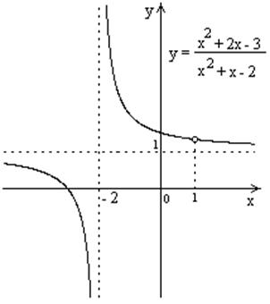

П 19ТУ№16
Построим график функции без использования производной.
Преобразуем выражение: , .
График этой функции получается смещением
графика на две единицы влево, на
одну единицу вверх и выкалыванием точки графика с абсциссой  .
.
.Прямые  и
являются вертикальной и горизонтальной
асимптотами.
и
являются вертикальной и горизонтальной
асимптотами.
и
являются вертикальной и горизонтальной
асимптотами.Для гиперболы с центром симметрии в точке  уравнения
вертикальной и горизонтальной асимптот имеют вид: и
уравнения
вертикальной и горизонтальной асимптот имеют вид: и
 .
.
уравнения
вертикальной и горизонтальной асимптот имеют вид: и
.